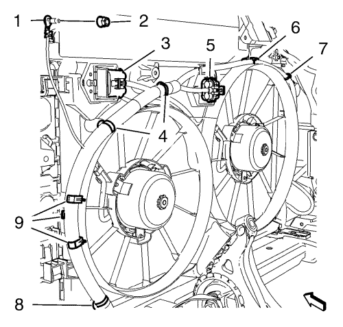

Cruze
Sustitución del mazo de cables del ventilador de refrigeración del motor — 2.0L Diésel LNP
Procedimiento de desmontaje
Abra el capó.
Desconecte el cable negativo de la batería. Consulte
Desconexión y conexión del cable negativo de la batería
→
sin sistema de arranque/parada
.
Desemborne los 2 enchufes del mazo de cables del módulo de control del motor (1) del módulo de control del motor (2).
Retire el soporte del módulo de control del motor (2) junto con el módulo de control del motor (1) de la bandeja de la batería (3).
Desmonte la bandeja de la batería. Consultar
Sustitución de la bandeja de la batería
.
Desmonte el panel del paragolpes delantero. Consultar
Sustitución del panel del parachoques delantero
.
Desemborne el enchufe del mazo de cables del sensor de presión del refrigerante del aire acondicionado (1).
Elevar el vehículo y soportarlo de manera segura. Consultar
Elevación y soporte en alto del vehículo
.
Desmonte el aislante del compartimento del motor. Consultar
Sustitución del aislamiento del compartimento delantero
.
Deslice la caja del módulo CRFM (2) hacia la derecha y retírela del soporte.
Desemborne los 4 enchufes del mazo de cables (1, 3).

Suelte el clip para mazo de cables (8) de la cubierta del ventilador de refrigeración del motor.
Suelte el mazo de cables de las sujeciones de la cubierta del ventilador de refrigeración del motor (9). Cuelgue el mazo de cables a un lado.
Bajar el vehículo.
Retire la tuerca del cable de masa del mazo de cables (2) y el cable de masa del mazo de cables (1).
Desemborne los 2 enchufes del mazo de cables del motor del ventilador de refrigeración del motor (3, 5).
Suelte el clip para mazo de cables (4, 7) de la cubierta del ventilador de refrigeración del motor.
Suelte el mazo de cables de las sujeciones de la cubierta del ventilador de refrigeración del motor (6).
Retire del vehículo el mazo de cables de la cubierta del ventilador de refrigeración del motor.
Procedimiento de montaje
Monte y coloque en la posición correcta el enchufe del mazo de cables de la cubierta del ventilador de refrigeración del motor.
Fije el mazo de cables a las sujeciones de la cubierta del ventilador de refrigeración del motor (6).
Fije el clip para mazo de cables (4, 7) a la cubierta del ventilador de refrigeración del motor.
Emborne los 2 enchufes del mazo de cables del motor del ventilador de refrigeración del motor (3, 5).
Precaución:
Consulte
Precaución con las fijaciones
en la sección Prólogo.
Monte el cable de masa del mazo de cables (1) y la tuerca del cable de masa del mazo de cables (2) y apriételos a
9 N·m (80 lib. pulg)
.
Elevar el vehículo
Fije el mazo de cables a las sujeciones de la cubierta del ventilador de refrigeración del motor (9).
Fije el clip para mazo de cables (8) a la cubierta del ventilador de refrigeración del motor.
Conecte los 4 enchufes del mazo de cables (1, 3).
Monte la caja del módulo CRFM (2) en el soporte y deslícela hacia la izquierda hasta que se detenga.
Monte el aislante del compartimento del motor. Consultar
Sustitución del aislamiento del compartimento delantero
.
Bajar el vehículo.
Emborne el enchufe del mazo de cables del sensor de presión del refrigerante del aire acondicionado (1).
Monte el panel del parachoques delantero. Consultar
Sustitución del panel del parachoques delantero
.
Monte la bandeja de la batería. Consultar
Sustitución de la bandeja de la batería
.
Monte el soporte del módulo de control del motor (2) junto con el módulo de control del motor (1) en la bandeja de la batería (3).
Emborne los 2 enchufes del mazo de cables del módulo de control del motor (1) al módulo de control del motor (2).
Conecte el cable negativo de la batería. Consulte
Desconexión y conexión del cable negativo de la batería
→
sin sistema de arranque/parada
.
Cierre el capó.
© Copyright Chevrolet. All rights reserved